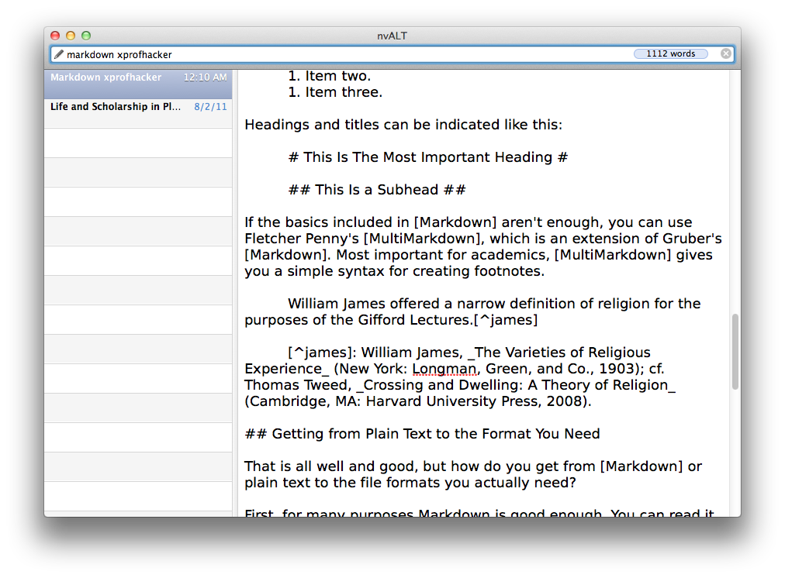

<h1 id="markdown-the-syntax-you-probably-already-know">Markdown: The Syntax You (Probably) Already Know</h1>
<div class="figure">
<p class="caption">Writing in Markdown using nvALT</p>
</div>
<p>There's a simple idea about productivity and writing: almost anything you need to do, you can do in a plain text file. By a plain text file, I mean a .txt file that contains nothing but text without formatting---the kind of file that your PC probably opens in <a href="http://en.wikipedia.org/wiki/Notepad_(software)">Notepad</a> and that your Mac opens in <a href="http://en.wikipedia.org/wiki/TextEdit">TextEdit</a>. (Linux users already know what I'm talking about.)</p>
<p>There are a lot of reasons to love plain text. We've mentioned some of them in earlier ProfHacker posts, such as Alex's about <a href="http://chronicle.com/blogs/profhacker/profhacking-the-ultimate-word-processor/33369">JDarkRoom</a> and Jason's about <a href="http://chronicle.com/blogs/profhacker/move-quickly-from-idea-to-draft-with-notational-velocity/35085">nvALT</a>. Briefly, plain text is a great format to use because (1) it can be read by any computer or device; (2) it's future proof, since computers will always be able to read it; (3) it can be synced to all your devices; (4) it can be converted to virtually any format. In a future post, I plan to explain the virtues of plain text at greater length.</p>
<p>But there is one major objection to writing in plain text. In fact, it's an objection that ProfHacker commenter <a href="http://chronicle.com/blogs/profhacker/profhacking-the-ultimate-word-processor/33369#comment-207000625">iredale</a> has made:</p>
<blockquote>
<p>The program saves only to .txt files? That's not a &quot;word processor,&quot; it's a &quot;text editor.&quot;  And while it might work for techno-geeks who write code, it's utterly useless for many of us in academia. With the exception of email, virtually everything I write requires formatting. And not just the basics -- font, type size and spacing -- but also things like footnotes, headers, and footers.</p>
</blockquote>
<p>There's a way for plain text to handle formatting too, in a way that's lightweight and so easy to learn, you might already know it.</p>
<h2 id="the-syntax-you-already-know">The Syntax You Already Know</h2>
<p>Suppose you're writing an e-mail (that will be sent in plain text). You want to mention a book to a student, but because it's plain text you can't <em>italicize</em> the title. What do you do? You would probably use underscores, like this:</p>
<pre><code>    Be sure to read William James, _The Varieties of Religious Experience_.
</code></pre>
<p>That looks like a title. But you also want to emphasize a point, using <strong>bold</strong> if it weren't plain text. So you might write something like this:</p>
<pre><code>    James's book will **definitely** be covered on the final exam.
</code></pre>
<p>That gets the point across. And of course, you'll want to quote something from the book, so you might invent a way to format a block quote, borrowing from how your e-mail program formats quotes:</p>
<pre><code>    You must be able to discuss James's definition of religion:
        &gt; Religion, therefore, as I now ask you arbitrarily
        &gt; to take it, shall mean for us the feelings, acts, and 
        &gt; experiences of individual men in their solitude,
        &gt; so far as they apprehend themselves to stand in
        &gt; relation to whatever they may consider the divine.
</code></pre>
<p>And you'll also want to include a link to the book, and it would be nice to distinguish the link from the text, so you use angle brackets ( &lt; and &gt; ):</p>
<pre><code>    James's book is available in full text at Google Books &lt;http://books.google.com/books?id=OESbXvtUkIsC&gt;.
</code></pre>
<p>We've invented a simple syntax that handles basic typography even in plain text. If that syntax makes even a little bit of sense to you, the congratulations: you already understand <a href="http://daringfireball.net/projects/markdown/">Markdown</a>.</p>
<h2 id="markdown">Markdown</h2>
<p><a href="http://daringfireball.net/projects/markdown/">Markdown</a> is a syntax invented by John Gruber for marking up plain text. It's a markup language, like HTML, in that you indicate the structure and meaning of parts of a document. It's unlike HTML, in that Markdown is meant to be read by humans, rather than machines.</p>
<p>So Markdown's <a href="http://daringfireball.net/projects/markdown/syntax">syntax</a> is very simple. In addition to the examples above, you can make lists using bullets or numbers:</p>
<pre><code>    * An item.
    * Another item.
    * Yet another item.

    1. Item one.
    1. Item two.
    1. Item three.
</code></pre>
<p>Headings and titles can be indicated like this:</p>
<pre><code>    # This Is The Most Important Heading #

    ## This Is a Subhead ##
</code></pre>
<p>If the basics included in <a href="http://daringfireball.net/projects/markdown/">Markdown</a> aren't enough, you can use Fletcher Penny's <a href="http://fletcherpenney.net/multimarkdown/">MultiMarkdown</a>, which is an extension of Gruber's <a href="http://daringfireball.net/projects/markdown/">Markdown</a>. Most important for academics, <a href="http://fletcherpenney.net/multimarkdown/">MultiMarkdown</a> gives you a simple syntax for creating footnotes.</p>
<pre><code>    William James offered a narrow definition of religion for the purposes of the Gifford Lectures.[^james]

    [^james]: William James, _The Varieties of Religious Experience_ (New York: Longman, Green, and Co., 1903); cf. Thomas Tweed, _Crossing and Dwelling: A Theory of Religion_ (Cambridge, MA: Harvard University Press, 2008).
</code></pre>
<h2 id="getting-from-plain-text-to-the-format-you-need">Getting from Plain Text to the Format You Need</h2>
<p>That is all well and good, but how do you get from <a href="http://daringfireball.net/projects/markdown/">Markdown</a> or plain text to the file formats you actually need?</p>
<p>First, for many purposes Markdown is good enough. You can read it, edit it, and e-mail it to a colleague as easily as you can any other file format. And at the very least, you can copy and paste plain-text anywhere (but good luck getting your data out of other programs)</p>
<p>For many purposes, though, you'll need to move your text into a more complicated format. That's why <a href="http://daringfireball.net/projects/markdown/">Markdown</a> is also the name of a Perl script that Gruber wrote to transform Markdown syntax into HTML to be put on the web. If you know what to do with a Perl script, good for you. But if you're already on the command line, you should use <a href="http://johnmacfarlane.net/pandoc/">Pandoc</a> instead, which can convert between an amazing array of file formats, including Markdown, <a href="http://chronicle.com/blogs/profhacker/getting-started-with-latex/23092">LaTeX</a>, RTF, ODT, and HTML. (We'll cover <a href="http://johnmacfarlane.net/pandoc/">Pandoc</a> more in a later post.)</p>
<p>Or, if you're not comfortable with the command line, you can use any of a number of free or cheap programs. <a href="http://chronicle.com/blogs/profhacker/move-quickly-from-idea-to-draft-with-notational-velocity/35085">nvALT</a>, which is the program I'm using to write this post, will let you export a document from plain text to HTML or PDF.</p>
<p>There is also a tutorial for another way of getting from <a href="http://www.practicallyefficient.com/2011/07/21/word-internet/">Markdown to Word</a> without using Pandoc.</p>
<p>At the risk of being too meta, I've put my original plain text file for this blog post, written in Markdown, along with the blog post converted to HTML, LaTeX, RTF, and ODT to a <a href="https://github.com/lmullen/markdown-demonstration">Github repository</a>. I've also taken the examples I used and put them into separate files. You can <a href="https://github.com/lmullen/markdown-demonstration">browse those files</a> to see how <a href="http://daringfireball.net/projects/markdown/">Markdown</a> syntax ends up becoming other files.</p>
<p><strong>What about you? Are you living the plain text life? Have you used Markdown?</strong></p>
